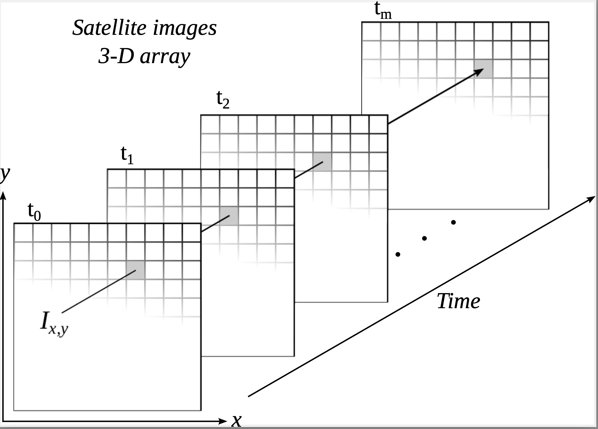
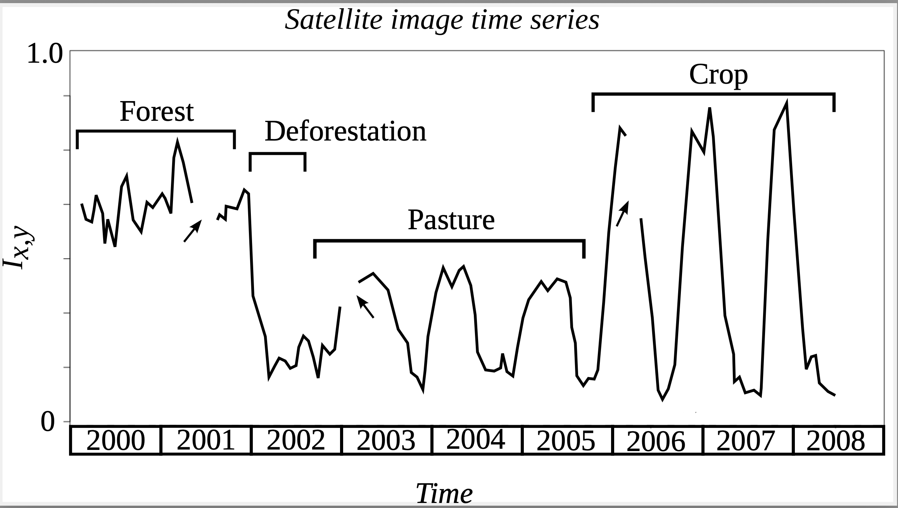

5 Land cover and crop classification schemas
5.1 Introduction
Satellite images are the most comprehensive source of data about our environment; they provide essential information on global challenges. Images provide information for measuring deforestation, crop production, food security, urban footprints, water scarcity, land degradation, among other uses. In recent years, space agencies have adopted open distribution policies. Petabytes of Earth observation data are now available. Experts now have access to repeated acquisitions over the same areas; the resulting time series improve our understanding of ecological patterns and processes[1]. Instead of selecting individual images from specific dates and comparing them, researchers can track changes continuously[2]. To handle big data, scientists are developing new algorithms for image time series (for recent surveys, see [5]). These methods are data-driven and theory-limited. However, numbers do not speak for themselves [6]. Data-driven approaches without solid theories can lead to results which will not increase our knowledge [7].
Consider how experts use Earth observation data. Their input are images with resolution ranging from 5 to 500 meters, produced by satellites such as Landsat, Sentinels-1/2/3, and CBERS-4. To extract information, experts use methods that assign a label to each pixel (e.g., ‘grasslands’). Labels can represent either land cover or land use. Land cover is the observed biophysical cover of the Earth’s surface; land use concepts describe socio-economic activities\cite[8]. Thus, forest' is a type of land cover, whilecorn plantation’ is a kind of land use. To support land classification, scientists have proposed ontologies and descriptive schemes [9]. We might thus ask: Are the current classification systems suitable to represent land change when working with big data? If not, which concepts are needed and how should they be applied?
In what follows, we present the prevailing consensus on classification systems: FAO’s Land Cover Classification System (LCCS)\cite[10]. We argue that LCCS does not meet the challenges posed by big data. To support our views, we consider concepts used on image time series analysis; we show these concepys are related to event recognition and are not representable in LCCS. To improve the theory behind big data, we introduce elements of a phenology based approach for land classification.
5.2 Classification systems for Earth observation data: current status
The act of classification raises philosophical questions dating as far back as Aristotle. We use an a priori conception of reality to classify the world; what we observe has to fit our categories. Words in our language describe elements of the external reality. However, geographical terms such as mountain' andriver’ are imprecise and context-dependent[13]. These ambiguities have motivated research on geospatial semantics [16]. However, building such complete ontologies is hard. Janowicz et al. [17] recognize that “geographical concepts are situated and context-dependent, can be described from different, equally valid, points of view, and ontological commitments are arbitrary to a large extent”. Work on classification systems has shifted. Rather than using a single ontology, the current consensus argues for domain ontologies based on a common foundational ontology. These domain ontologies are means of making concepts of specific disciplines explicit and better communicating them [19].
The semantics of Earth observation data are constrained by classification systems. Experts agree on what are the possible descriptions of the objects in the image (e.g., “forest”, “river”, “pasture”). Each pixel of the image is then labeled using visual or automated interpretation. As an example, for countries reporting greenhouse gas inventories, the International Panel of Climate Change (IPCC) restricts the top-level land classes to ‘forest’, ‘cropland’, ‘grassland’, ‘wetlands’, ‘settlements’, and ‘others’. This approach is too simplistic. Sasaki and Putz [20] criticize the IPCC base classes for inducing wrong assessments for ecological and biodiversity conservation. The IPCC classes are an example where pre-conceived rules collide with the diversity of the world’s ecosystems.
Since land classification provides essential information about our environment, many GIScience researchers have addressed the subject of land use and land cover semantics [23]. They investigated consistency of classification systems [24], semantic similarity between terms used by different systems [25], and disagreements between results [26]. The current consensus favors ontologies aiming at unambiguous definitions of land cover classes, such as the FAO Land Cover Classification System (LCCS) [10]. For this reason, it is important to discuss whether LCCS works well with big EO data.
FAO has developed the Land Cover Classification System (LCCS) “to provide a consistent framework for the classification and mapping of land cover” [27]. LCCS is a hierarchical system. At its highest level, LCCS has eight major land cover types:
- Cultivated and managed terrestrial areas.
- Natural and semi-natural terrestrial vegetation.
- Cultivated aquatic or regularly flooded areas.
- Natural and semi-natural aquatic or regularly flooded vegetation.
- Artificial surfaces and associated areas.
- Bare areas.
- Artificial water bodies, snow, and ice.
- Natural water bodies, snow, and ice.
The division on eight classes considers three criteria: presence of vegetation, edaphic conditions, and artificiality of cover [27]. Specialization of top-level LCCS classes uses properties such as life form, tree height, and vegetation density, setting pre-defined limits (e.g., “tree height > 10 meters”). These subdivisions are ad hoc and application-dependent, leading to a combinational explosion with dozens or even hundreds of subclasses [10]. Such high expressive power can lead to incompatible LCCS-based class hierarchies [[24]}.
LCCS is a landmark initiative; it provides a basis for a common understanding of land cover concepts. Many global and regional land mapping products use LCCS, including GLOBCOVER [28] and ESA CCI Land Cover [29]. However, LCCS makes assumptions which limit its use with big data:
- LCCS describes land properties based only on land cover types, disregarding land use. For example, LCCS does not distinguish
pasture' fromnatural grasslands’; it labels both as herbaceous land cover types. - The LCCS hierarchy uses hard boundaries between its subclasses. At each level of the hierarchy, properties of subclasses use fixed values (e.g., “sparse forests have between 10% and 30% of trees”). Real-world class boundaries do not fit into such strict definitions. When doing data analysis with machine learning, boundaries between classes are data-dependent and cannot be set a priori [30].
- Classification in LCCS has no temporal reference. LCCS assumes that subtype properties (e.g., percent of tree cover) are detectable at the moment of classification. These properties do not refer to past or future values. Land use and land cover types whose values require time references (e.g., “forest land cleared in the last decade”) are not representable in LCCS.
For example, the UNFCCC Reduction of Emissions by Deforestation and Degradation initiative (REDD+) requires representing and measuring forest dynamics [31]. Static and rigid definitions of “forest” used by LCCS cannot represent concepts such as `forest degradation’ [32]. Forest degradation happens when a natural forest loses part of its biodiversity and its tree cover. It is not a stable state but an intermediary situation that can lead to different medium-term outcomes. One can restore a degraded forest; degradation may continue and lead to complete loss of forest cover. Whatever the case, LCCS lacks explicit temporal information to capture forest degradation and thus support initiatives such as REDD+. Therefore, LCCS is thus not fit for many critical applications of EO data.
5.3 Elements of a phenology-based classification schemas
To represent change in geographical space, GIScience authors distinguish between continuants and occurrents [36]. Continuants refer to entities that “endure through time even while undergoing different sorts of changes” [33]. The Amazon Forest and the city of Brasilia are continuants. Occurrents happen in a well-defined period and may have different stages during this time. Cutting down a forest area, cultivating a crop in a season, and building a road are occurrents. Objects are associated to continuants and events to occurrents.
Atemporal classification systems such as LCCS refer only to properties of continuants. One can state facts such as “this area has 30% forest cover” using LCCS, but cannot assert that “this area lost 70% of its forest in the last two years”. To convey change, classification systems for big data need to include occurrents. In what follows, we discuss concepts used in the analysis of satellite image time series. These time series are extracted from organized collections of Earth observation data covering a geographical area in regular temporal intervals.
5.4 The key role of time series
Since remote sensing satellites revisit the same place, we can calibrate their images so that measures of the same place at different times are comparable (Figure \(\ref{fig:sits_a}\)). These observations can be organized so that each measure from the sensor maps to a three-dimensional array in space-time. From a data analysis perspective, each pixel location \((x, y)\) at consecutive times, \(t_1,...,t_m\), makes up a satellite image time series (SITS), such as the one in Figure \(\ref{fig:sits_b}\). From these time series, we can extract land-use and land-cover change information. In Figure \(\ref{fig:sits_b}\), after the forest was cut in 2002, the area was used for cattle raising (pasture) for three years, during 2002 to 2008, then turned into cropland.

References{-}
[1]
V. J. Pasquarella, C. E. Holden, L. Kaufman, and C. E. Woodcock, “From imagery to ecology: Leveraging time series of all available LANDSAT observations to map and monitor ecosystem state and dynamics,” Remote Sensing in Ecology and Conservation, vol. 2, no. 3, pp. 152–170, 2016, doi: 10.1002/rse2.24.
[2]
C. E. Woodcock, T. R. Loveland, M. Herold, and M. E. Bauer, “Transitioning from change detection to monitoring with remote sensing: A paradigm shift,” Remote Sensing of Environment, vol. 238, p. 111558, 2020, doi: 10.1016/j.rse.2019.111558.
[3]
C. Gomez, J. C. White, and M. A. Wulder, “Optical remotely sensed time series data for land cover classification: A review,” {ISPRS} Journal of Photogrammetry and Remote Sensing, vol. 116, pp. 55–72, 2016, doi: 10.1016/j.isprsjprs.2016.03.008.
[4]
Z. Zhu, “Change detection using landsat time series: A review of frequencies, preprocessing, algorithms, and applications,” ISPRS Journal of Photogrammetry and Remote Sensing, vol. 130, pp. 370–384, 2017, doi: 10.1016/j.isprsjprs.2017.06.013.
[5]
L. Zeng, B. D. Wardlow, D. Xiang, S. Hu, and D. Li, “A review of vegetation phenological metrics extraction using time-series, multispectral satellite data,” Remote Sensing of Environment, vol. 237, p. 111511, 2020, doi: 10.1016/j.rse.2019.111511.
[6]
danah boyd and K. Crawford, “Critical Questions for Big Data,” Information, Communication & Society, vol. 15, no. 5, pp. 662–679, 2012, doi: 10.1080/1369118X.2012.678878.
[7]
R. Kitchin, “Big Data, new epistemologies and paradigm shifts,” Big Data & Society, vol. 1, no. 1, p. 2053951714528481, 2014, doi: 10.1177/2053951714528481.
[8]
A. Comber, “The separation of land cover from land use using data primitives,” Journal of Land Use Science, vol. 3, no. 4, pp. 215–229, 2008, doi: https:/doi.org/10.1080/17474230802465173.
[9]
M. Herold, R. Hubald, and A. Di Gregorio, “Translating and evaluating land cover legends using the UN Land Cover Classification System (LCCS),” GOFC-GOLD Florence, Italy, 2009.
[10]
M. Herold et al., “A joint initiative for harmonization and validation of land cover datasets,” IEEE Transactions on Geoscience and Remote Sensing, vol. 44, no. 7, pp. 1719–1727, 2006, doi: 10.1109/TGRS.2006.871219.
[11]
B. Smith and D. M. Mark, “Geographical categories: An ontological investigation,” International Journal of Geographical Information Science, vol. 15, no. 7, pp. 591–612, 2001, doi: 10.1080/13658810110061199.
[12]
B. Smith and D. M. Mark, “Do Mountains Exist? Towards an Ontology of Landforms,” Environment and Planning B: Planning and Design, vol. 30, no. 3, pp. 411–427, 2003, doi: 10.1068/b12821.
[13]
D. M. Mark and A. G. Turk, “Landscape Categories in Yindjibarndi: Ontology, Environment, and Language,” in Spatial Information Theory. Foundations of Geographic Information Science, 2003, pp. 28–45, doi: 10.1007/978-3-540-39923-0_3.
[14]
B. Smith and D. M. Mark, “Ontology and Geographic Kinds,” 1998, [Online]. Available: https://philarchive.org.
[15]
F. Fonseca, M. Egenhofer, C. Davis, and G. Câmara, “Semantic Granularity in Ontology-Driven Geographic Information Systems,” Annals of Mathematics and Artificial Intelligence, vol. 36, no. 1, pp. 121–151, 2002, doi: 10.1023/A:1015808104769.
[16]
W. Kuhn, “Geospatial Semantics: Why, of What, and How?” Journal on Data Semantics, vol. 3, pp. 1–24, 2005, doi: 10.1007/11496168_1.
[17]
K. Janowicz, S. Scheider, T. Pehle, and G. Hart, “Geospatial semantics and linked spatiotemporal data – Past, present, and future,” Semantic Web, vol. 3, no. 4, pp. 321–332, 2012, doi: 10.3233/SW-2012-0077.
[18]
B. Smith et al., “The OBO Foundry: Coordinated evolution of ontologies to support biomedical data integration,” Nature Biotechnology, vol. 25, no. 11, pp. 1251–1255, 2007, doi: 10.1038/nbt1346.
[19]
P. L. Buttigieg, N. Morrison, B. Smith, C. J. Mungall, S. E. Lewis, and the ENVO Consortium, “The environment ontology: Contextualising biological and biomedical entities,” Journal of Biomedical Semantics, vol. 4, no. 1, p. 43, 2013, doi: 10.1186/2041-1480-4-43.
[20]
N. Sasaki and F. E. Putz, “Critical need for new definitions of ‘forest’ and ‘forest degradation’ in global climate change agreements,” Conservation Letters, vol. 2, no. 5, pp. 226–232, 2009, doi: 10.1111/j.1755-263X.2009.00067.x.
[21]
A. Comber, P. Fisher, and R. Wadsworth, “What is Land Cover?” Environment and Planning B: Planning and Design, vol. 32, no. 2, pp. 199–209, 2005, doi: 10.1068/b31135.
[22]
O. Ahlqvist, “Using uncertain conceptual spaces to translate between land cover categories,” International Journal of Geographical Information Science, vol. 19, no. 7, pp. 831–857, 2005, doi: 10.1080/13658810500106729.
[23]
O. Ahlqvist, D. Varanka, S. Fritz, and K. Janowick, Eds., Land Use and Land Cover Semantics: Principles, Best Practices, and Prospects. CRC Press, 2017.
[24]
L. J. M. Jansen, G. Groom, and G. Carrai, “Land-cover harmonisation and semantic similarity: Some methodological issues,” Journal of Land Use Science, vol. 3, no. 2–3, pp. 131–160, 2008, doi: 10.1080/17474230802332076.
[25]
C.-C. Feng and D. M. Flewelling, “Assessment of semantic similarity between land use/land cover classification systems,” Computers, Environment and Urban Systems, vol. 28, no. 3, pp. 229–246, 2004, doi: 10.1016/S0198-9715(03)00020-6.
[26]
S. Fritz et al., “Highlighting continued uncertainty in global land cover maps for the user community,” Environmental Research Letters, vol. 6, no. 4, p. 044005, 2011, doi: 10.1088/1748-9326/6/4/044005.
[27]
A. Di Gregorio, “Land Cover Classification System - Classification concepts Software version 3,” FAO, 2016.
[28]
O. Arino et al., “GlobCover: ESA service for global land cover from MERIS,” in 2007 IEEE International Geoscience and Remote Sensing Symposium, 2007, pp. 2412–2415, doi: 10.1109/IGARSS.2007.4423328.
[29]
W. Li, P. Ciais, N. MacBean, S. Peng, P. Defourny, and S. Bontemps, “Major forest changes and land cover transitions based on plant functional types derived from the ESA CCI Land Cover product,” International Journal of Applied Earth Observation and Geoinformation, vol. 47, pp. 30–39, 2016, doi: 10.1016/j.jag.2015.12.006.
[30]
T. Hastie, R. Tibshirani, and J. Friedman, The Elements of Statistical Learning. Data Mining, Inference, and Prediction. New York: Springer, 2009.
[31]
E. Corbera and H. Schroeder, “Governing and implementing REDD+,” Environmental Science & Policy, vol. 14, no. 2, pp. 89–99, 2011, doi: 10.1016/j.envsci.2010.11.002.
[32]
F. E. Putz and K. H. Redford, “The Importance of Defining ‘Forest’: Tropical Forest Degradation, Deforestation, Long-term Phase Shifts, and Further Transitions,” Biotropica, vol. 42, no. 1, pp. 10–20, 2010, doi: 10.1111/j.1744-7429.2009.00567.x.
[33]
P. Grenon and B. Smith, “SNAP and SPAN: Towards Dynamic Spatial Ontology,” Spatial Cognition & Computation, vol. 4, no. 1, pp. 69–104, 2004, doi: 10.1207/s15427633scc0401_5.
[34]
A. Galton, “Fields and Objects in Space, Time, and Space-time,” Spatial Cognition & Computation, vol. 4, no. 1, pp. 39–68, 2004, doi: 10.1088/1748-9326/6/4/04400510.1207/s15427633scc0401_4.
[35]
A. Galton, “Experience and History: Processes and their Relation to Events,” Journal of Logic and Computation, vol. 18, no. 3, pp. 323–340, 2008, doi: 10.1088/1748-9326/6/4/04400510.1093/logcom/exm079.
[36]
M. Worboys, “Event-oriented approaches to geographic phenomena,” International Journal of Geographical Information Science, vol. 19, no. 1, pp. 1–28, 2005, doi: 10.1080/13658810412331280167.
[37]
M. Picoli et al., “Big earth observation time series analysis for monitoring Brazilian agriculture,” ISPRS Journal of Photogrammetry and Remote Sensing, vol. 145, pp. 328–339, 2018, doi: 10.1016/j.isprsjprs.2018.08.007.